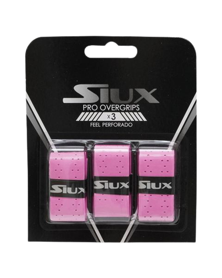

SIUX PRO PERFORADO

Caracteristicas:
- Los Blister Overgrips Siux Pro X3 en color rosa fluor son perfectos para mejorar el agarre a la pala durante los entrenamientos o partidos más exigentes. Fabricado con materiales de la mejor calidad, estos overgrips se adhieren perfecto al mango de tu pala. Además, gracias a su diseño perforado mejora la transpirabilidad y la comodidad.
Precio: 6.95€